Input Widgets & Forms Menangkap Data, Dropdown, dan Validasi
Dibuat : September 2026
Repository GitHub
Praktikum ini dilakukan untuk mempelajari cara membuat formulir input yang terstruktur
dan interaktif pada Flutter. Mengembangkan aplikasi yang mampu menampilkan data,
menerima dan memvalidasi input dari pengguna sebelum data tersebut
diproses lebih lanjut oleh sistem. Mengimplementasikan widget Flutter seperti
Form, DropdownButtonFormField,
TextEditingController,
TextFormField, dan menggunakan GlobalKey<FormState>
untuk mengendalikan proses validasi seluruh komponen input secara bersamaan.
Studi kasus pada praktikum ini adalah membuat aplikasi pencatatan transaksi keuangan
(AddTransactionScreen), di mana pengguna dapat mengisi judul transaksi,
nominal, kategori melalui dropdown, serta tanggal melalui kalender interaktif
(Date Picker). Semua field dilengkapi validasi otomatis, dan hasil yang lolos
validasi ditampilkan melalui notifikasi SnackBar.
Form dan
GlobalKey<FormState>.
TextEditingController untuk mengelola dan membaca
nilai input teks.validator pada TextFormField
untuk validasi data input (mencegah data kosong atau format salah).DropdownButtonFormField untuk input pilihan kategori.
showDatePicker untuk input tanggal interaktif.SnackBar.
dispose().
Form adalah widget container yang mengkelompokkan beberapa
field input ke dalam satu unit yang dapat divalidasi dan disimpan secara
bersamaan. GlobalKey<FormState> adalah kunci unik yang
memberikan akses langsung ke objek FormState, sehingga kita
dapat memanggil metode seperti validate() dari luar widget
tree. Saat validate() dipanggil, Flutter akan menjalankan
fungsi validator pada seluruh field di dalam form tersebut
secara otomatis.
TextEditingController adalah objek yang mengendalikan teks
pada sebuah TextField atau TextFormField.
Dengan controller ini, kita dapat membaca nilai teks yang diketikkan
pengguna melalui properti .text, mengatur nilai awal field,
maupun membersihkan isinya secara programatik. Setiap controller yang
dibuat wajib di-dispose saat widget dihancurkan untuk
mencegah kebocoran memori (memory leak).
validator pada TextFormField menerima
sebuah fungsi dengan parameter value (isi field saat ini).
Jika fungsi mengembalikan null, field dianggap valid. Jika
mengembalikan sebuah String, teks tersebut akan ditampilkan
sebagai pesan error di bawah field secara otomatis oleh Flutter.
Pendekatan ini memisahkan logika validasi dari logika UI, membuat kode
lebih bersih dan mudah diuji.
DropdownButtonFormField adalah varian dropdown yang
terintegrasi penuh dengan sistem Form Flutter, sehingga
mendukung properti validator dan ikut divalidasi saat
formKey.currentState!.validate() dipanggil. Daftar pilihan
disediakan melalui properti items bertipe
List<DropdownMenuItem>, dan perubahan pilihan ditangkap
oleh callback onChanged yang memperbarui state melalui
setState().
showDatePicker() adalah fungsi bawaan Flutter Material yang
menampilkan dialog kalender interaktif secara asinkron. Fungsi ini
mengembalikan Future<DateTime?>, sehingga harus
ditangani dengan pola async/await. Nilai yang dipilih dapat
bernilai null jika pengguna menutup dialog tanpa memilih
tanggal, sehingga pengecekan if (picked != null) wajib
dilakukan sebelum memperbarui state.
SnackBar adalah komponen notifikasi ringan yang muncul
sementara di bagian bawah layar untuk memberikan umpan balik kepada
pengguna. Cara memanggilnya adalah melalui
ScaffoldMessenger.of(context).showSnackBar(). Penggunaan
ScaffoldMessenger (bukan Scaffold langsung)
memastikan SnackBar tetap tampil dengan benar meskipun terjadi transisi
navigasi atau perubahan halaman.
A. Entry Point Aplikasi (main.dart)
File main.dart berfungsi sebagai pintu masuk aplikasi.
Struktur widget sebagai berikut:
main() : fungsi pertama yang dieksekusi, memanggil
runApp() untuk menjalankan widget root.
MyApp (StatelessWidget) : widget root yang membungkus
seluruh aplikasi dengan MaterialApp. Di sini dikonfigurasi tema global
(Colors.deepPurple), judul aplikasi, dan penonaktifan banner debug.
home: AddTransactionScreen() : properti yang
menentukan
halaman pertama yang ditampilkan saat aplikasi dibuka, yaitu layar form transaksi
yang diimpor dari file terpisah.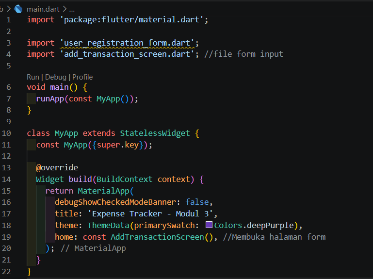
B. Halaman Form Transaksi
(add_transaction_screen.dart)
1. Kerangka StatefulWidget & Inisialisasi State
Halaman ini menggunakan StatefulWidget karena dropdown dan date picker
akan di perbarui saat interaksi pengguna. Deklarasi 3
TextEditingController untuk menerima input dari masing-masing
field teks, dan GlobalKey<FormState> untuk mengendalikan
validasi seluruh form.
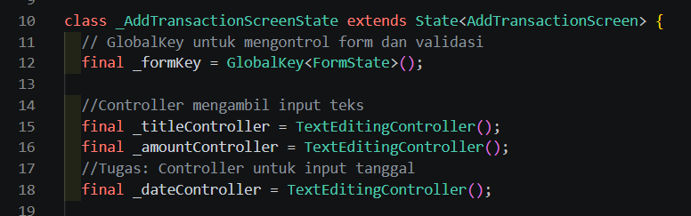
2. Inisialisasi dropdown kategori
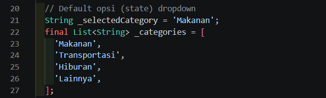
3. Manajemen Memori dengan
dispose()
Override metode dispose() untuk mengosongkan ketiga controller (input).
Untuk mencegah memory leak terjadi jika
controller dibiarkan aktif setelah halaman ditutup.
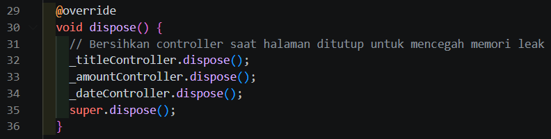
4. Widget scroll vertical
Menggunakan widget SingleChildScrollView pada
scaffold.
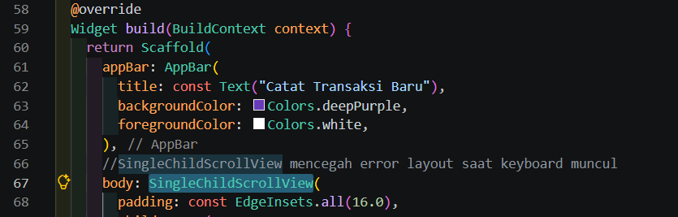
5. Field Input Teks & Validasi
Dua TextFormField dibuat di dalam widget Form: satu untuk
judul transaksi dan satu untuk nominal. Masing-masing dilengkapi properti
validator yang mengembalikan String pesan error jika
validasi gagal, atau null jika lolos. Khusus field nominal,
int.tryParse() digunakan untuk memastikan nilai yang dimasukkan
adalah angka bulat yang valid.
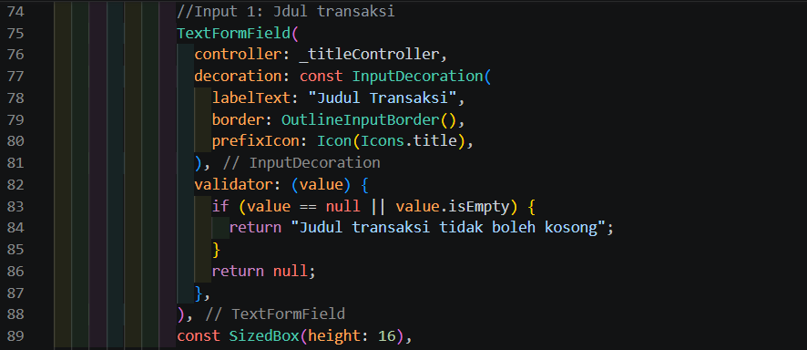
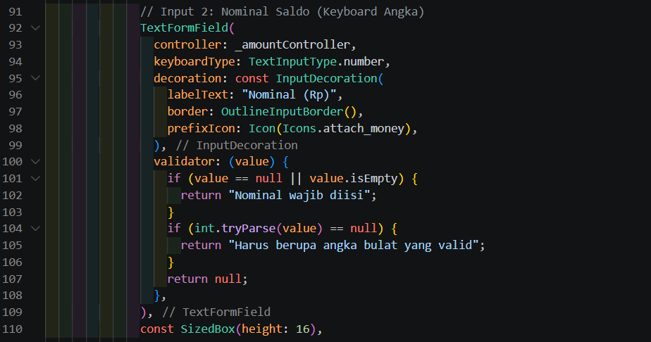
6. Input Pilihan Kategori (Dropdown)
DropdownButtonFormField digunakan untuk input kategori dengan empat
pilihan yang telah ditentukan. Daftar kategori di-mapping menjadi
List<DropdownMenuItem>, dan setiap perubahan pilihan memperbarui
variabel _selectedCategory melalui setState().
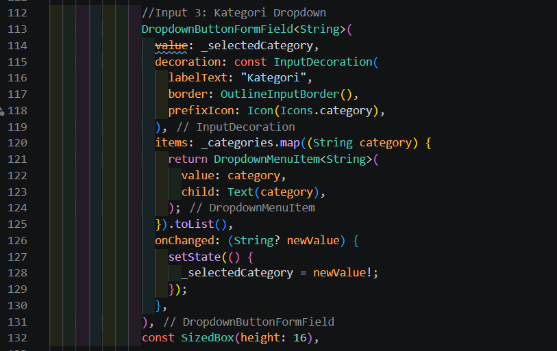
7. Tombol Simpan & Notifikasi SnackBar
ElevatedButton di bagian bawah form memanggil
_formKey.currentState!.validate() saat ditekan. Fungsi ini menjalankan
semua validator sekaligus dan mengembalikan true hanya jika seluruh
field lolos. Jika berhasil, SnackBar berwarna hijau muncul di bagian
bawah layar sebagai konfirmasi data telah tersimpan.
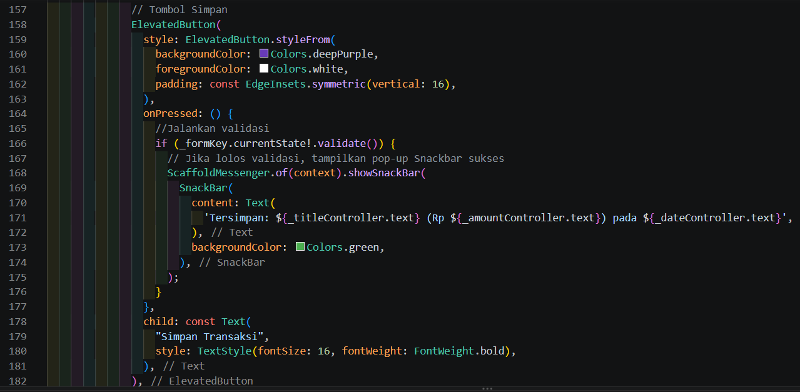
C. Tugas Praktikum – Penambahan Input
Tanggal (showDatePicker)
Tugas praktikum adalah menambahkan field input tanggal interaktif menggunakan
showDatePicker, sehingga pengguna tidak perlu mengetik tanggal secara
manual, melainkan memilih langsung dari dialog kalender bawaan Flutter.
1. Fungsi _selectDate()
Buat fungsi bertipe async yang memanggil showDatePicker().
Karena fungsi ini berjalan asinkron, digunakan pola await untuk menunggu
pilihan pengguna. Jika pengguna memilih tanggal (tidak menutup dialog), tanggal
diformat menjadi DD/MM/YYYY menggunakan padLeft(2, '0')
agar selalu dua digit, lalu dimasukkan ke _dateController.text.
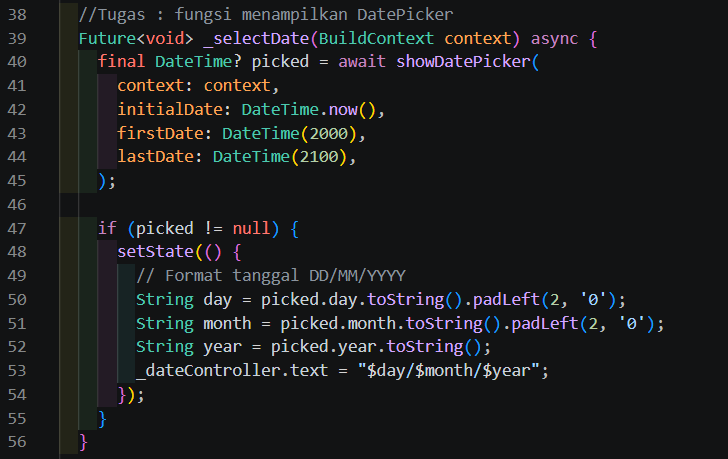
2. Field Tanggal
(TextFormField readOnly)
Hubungkan _selectDate() ke sebuah TextFormField yang
bersifat readOnly: true, sehingga pengguna tidak bisa mengetik langsung.
Dialog kalender terbuka melalui dua cara: mengetuk field (onTap) atau
menekan ikon kalender di sisi kanan (suffixIcon). Field ini juga
dilengkapi validator agar tidak bisa dibiarkan kosong.
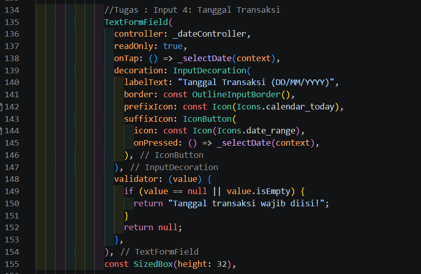
Output: setelah pengguna memilih tanggal dari kalender, nilai otomatis muncul
di field dengan format DD/MM/YYYY, dan ikut ditampilkan di SnackBar (bawah
halaman)
saat form berhasil disimpan.
Halaman AddTransactionScreen menampilkan form pencatatan transaksi yang
lengkap dalam satu halaman scrollable. Keterangan implementasi widget:
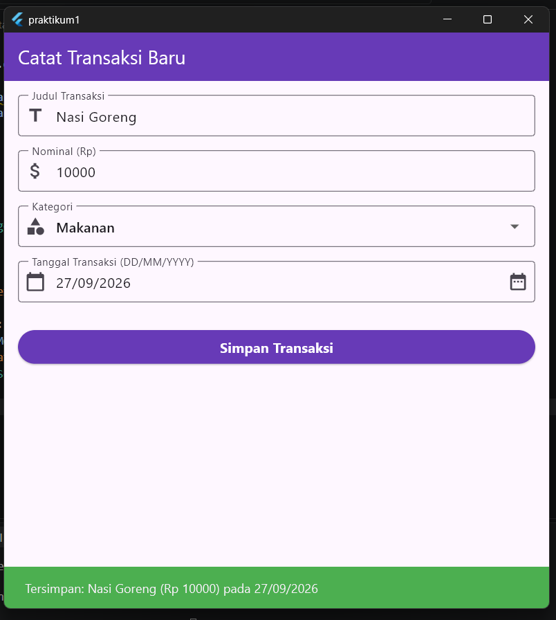
Dari hasil praktikum yang dilakukan, berhasil membangun halaman form input yang menggunakan berbagai widget input dan sistem validasi pada Flutter.
validate(), menghindari pengecekan manual satu per satu.
dispose()
memastikan tidak ada sumber daya yang terbuang sia-sia saat halaman ditutup.Kombinasi validasi, input interaktif, dan notifikasi membuat form ini contoh nyata pengembangan UI mobile yang bersih, responsif, dan ramah pengguna.